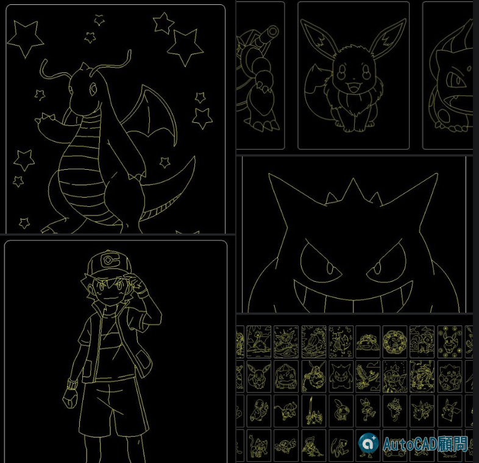

🎞線上課程🎞快速比例設定與出圖技巧_快速上手
https://autocad-tw.1shop.tw/pgodd8

註：論壇註冊免費加入
👇專屬B會員免回文下載
[專屬B分享]寶可夢圖塊下載
https://www.autocad-tw.com/t29350-topic
👇延伸閱讀:
[分享] Q 版人物 DWG 圖塊
https://www.autocad-tw.com/t29042-topic
👇加入專屬B會員說明
https://www.autocad-tw.com/t25159-topic